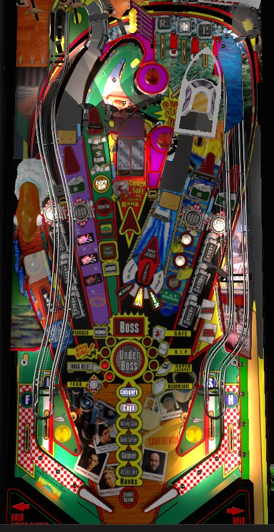

On an unmodified copy of The Sopranos, an exploit related to the game's playfield validation allows players to short plunge the ball to a flipper, shoot at one target, then intentionally drain and get the ball back for free since not enough switches were hit to validate the playfield. This can be done repeatedly at the start of any ball and is most beneficially done to start Stugots Multiball at the boat ramp for free.
In normal gameplay, focus on advancing through Ranks by either shooting all of the shots lit with green dollar signs followed by the spinner lane (in single ball play) or bashing on the Safe until it opens (in multiball). Left ramp and boat ramp shots progress toward multiballs. Making it all the way to Underboss rank lights all dollar sign shots for up to 1,000,000 points for the rest of the game unless you complete the many requirements blocking Boss wizard mode. FISH bottom lanes light the left saucer for a mystery; this will always give Add A Ball the first time it is used in any multiball.
That wasn't very quick, was it? Sorry about that.
The Sopranos has two intended skill shots and one unintended skill shot.
The conventional skill shot is a plunge to the RIP top lanes. One of the three lanes is flashing; make the flashing lane to score the skill shot. Flipper lane change can be used to move the flashing lane. Skill shots score 500,000 points the first time, increasing by 250,000 each subsequent time. Skill shots can only be earned at the start of a ball.
The super skill shot requires holding the left flipper as you plunge. This disables the one-way gate near the top lanes, allowing the ball to go all the way around the top of the table and down the left orbit. From here, making any major shot in the game scores a super skill shot. The super skill shot is worth the same number of points as a regular skill shot, but also counts as 3 shots' worth of credit to wherever the super skill shot was made. This can be used to instantly start a Truck Heist at either orbit, instantly start Party at the Bing at the left ramp, or instantly light one Item at the Meadowlands right ramp.
The unintended third skill shot is an exploitation of the game's playfield validation rules. The Sopranos does not recognize a ball a having entered the playfield until 3 different switches other than the slingshots are registered. If fewer than 3 switches are scored and the ball drains, another ball is kicked into the shooter lane at no penalty, and the 3-switch count resets. This invites the possibility of short plunging so that the ball comes down the right orbit and reaches the right flipper without hitting anything else in the game, making a dangerous shot to the Safe or the Boat ramp, and intentionally draining to do it again. Repeated use of this maneuver means it is possible to crack a Safe or start Stugots Multiball at the Boat ramp completely risk free at the start of any ball. To tell whether or not it's safe to drain your ball and get it back, look at the top lanes- if one of them is still flashing, then the game thinks the skill shot is still in play and that the playfield has not yet been validated. Copies of The Sopranos used for tournament play often have automatic ball launchers or alternate versions of the game code that prevent this exploit.
The main progression on The Sopranos is from advancing your Rank in the mafia. There are two ways to advance your Rank:
The two Rank advance methods can be worked on simultaneously and independently; earning a Rank from Envelopes does not reset any progress toward cracking the current Safe.
Each rank advance causes a different feature to score 2x its value for the rest of the ball where the rank is earned. All feature multipliers are reset when a ball drains.
The Sopranos has 4 multiballs: Stugots Multiball (sometimes called Boat Multiball), Bing Multiball, Underboss mini-wizard multiball, and Boss wizard multiball. The first three of those are mentioned in this section; Boss wizard mode is described later in the guide.
Stugots Multiball
Qualify by: locking 2 balls in the Stugots boat ramp. Generally, locks need to be qualified by hitting the lone drop target in front of the boat ramp enough times; 1 hit per lock for the 1st Stugots Multiball, increasing by 1 hit per lock for each subsequent Stugots Multiball. However, a very precise right flipper backhand shot can make the boat ramp even if the drop target is raised. If you do so, you earn a Quickie Bonus worth 250,000 (+125,000 each time); the ball that scored the Quickie Bonus will be kicked out, but the drop target will be lowered with lock lit, skipping the drop target phase entirely.
During multiball: Stugots Multiball is a 2-ball multiball (unless it is stacked with another multiball or the Fish market add-a-ball is earned). The base jackpot value at the start of every Stugots Multiball is 1,000,000 points; collecting a regular or super jackpot adds 25,000 to the jackpot value. Hit the boat ramp drop target 3 times to score 3 jackpots, then shoot the boat ramp twice to score a double jackpot and a super jackpot. (The super jackpot is a triple jackpot.) After the super is collected, all 5 major arrow shots (left and right orbit, left and right ramp, spinner lane) are lit for jackpots. If you collect all 5 of these, the entire sequence resets. Earning one super jackpot during Stugots Multiball is required to qualify Boss wizard mode.
Bing Multiball
Qualify by: first, shoot the left ramp 3 times to start Party at the Bing mode. Party at the Bing gives you 30 seconds to hit a certain number of switches anywhere in the game to start multiball; 75 switches the first time, increasing by 25 switches each time Bing Multiball is played. If you do not hit the required number of switches in time, the game remembers your progress, and you can pick up where you left off by shooting the left ramp 3 more times to start Party at the Bing again. The left ramp and the Fish mystery award give credit for 10 switch hits while Party at the Bing is running. When the required number of switch hits is completed, Bing Multiball begins instantly.
In multiball: all 5 arrow shots score the Bing Value, which starts at 125,000 points and increases by 5,000 each time it is scored up to a maximum of 250,000. There is no other progression. Scoring in Bing Multiball is underwhelming, so use this as a chance to shoot dangerous features like the Safe or boat ramp drop target with the safety net of an additional ball (or two) in play. Starting Bing Multiball once is required to qualify Boss wizard mode.
Underboss Multiball
Qualify by: reaching Underboss rank, This can be done via any combination of rank advances from the Safe or from collecting Envelopes. As soon as you reach Underboss, Underboss Multiball begins. The only way to play Underboss Multiball twice in one game is to play Boss wizard mode (after which your Rank is reset) and loop back around to Underboss.
In multiball: all 5 arrow shots are lit. Make any shot to score the current jackpot value- which starts at 350,000, increases by 75,000 each time, and maxes out at 1,250,000- and earn a letter in Underboss. When Underboss is spelled after 9 jackpots, the game wants you to shoot the 3 places where the ball can be locked: the left ramp, the spinner lane, and the boat ramp. These relocks score 250,000 points plus 75,000 for each time the relock shot in question has been made during Underboss. The first relock shot scores single value; the second relock shot scores 3x value; the third relock shot scores 5x value and sends you back to phase 1 to spell Underboss again. This mode continues until there is only one ball left in play. The values of Underboss letters in phase 1 and the relock shots in phase 2 never reset, so the more times you loop through the Underboss rules, the more points everything is worth.
After multiball: once Underboss Multiball has been played, both orbits and the left and right ramps will be indefinitely lit for an Envelope for the rest of the game (or until Boss wizard mode is started). In this state, the Envelope shots score a Tribute to Underboss, which scores 750,000 the first time and increases 50,000 each time up to 1,000,000 points per shot. 1,000,000 points per orbit for the rest of the game on top of the progress you get toward Truck Heists and RIP top lanes is extremely valuable.
Once per multiball, shooting the Fish in the lower left when lit will add a ball to the playfield, unless all 4 balls are already in play. To light Fish, spell Fish by lighting all 4 in/out lanes (with the help of flipper lane change).
The Sopranos has 5 main modes. To light Start Mode at the spinner lane, first spell Sopranos. Sopranos letters can be earned by hitting the yellow post targets located immediately left of the left ramp or immediately right of the safe, or by shooting the spinner lane. For the first mode played in a game, 3 Sopranos letters are spotted for you, decreasing by 1 with each mode played until 0 letters are given for free. When Sopranos is spelled, shoot the spinner lane to start the Episode main mode, as long as no multiball and no other Episode are running. (If an Episode or multiball are running, you can still spell Sopranos to qualify the next Episode mode, but you can't start the next Episode until there is no multiball or Episode in progress. The order that the Episodes are played is random and preset. Main modes include:
Playing all 5 Episodes (but not necessarily completing them) is one of the requirements for qualifying Boss wizard mode. Reaching Consigliere rank doubles all mode values for the rest of that ball.
Shooting either orbit 3 times starts a Truck Heist. The initial 3 shots score 100,000, then 125,000, then 150,000 points; these 3 values each increase by 25,000 for each successful Truck Heist, up to a maximum of 200,000/225,000/250,000. After the 3rd shot, the actual Truck Heist begins, which is a hurry-up collected at either orbit. The starting value for the hurry-up is 750,000 plus 75,000 per previously completed Truck Heist, with no limit that I have ever encountered, and it counts down to 250,000 before pausing for a few seconds then timing out. Shoot either orbit to complete the Truck Heist.
Completing 4 Truck Heists is one of the requirements for qualifying Boss wizard mode. Reaching Good Earner rank doubles all scoring related to Trucks and Truck Heists for the rest of the ball.
The left orbit and left ramp, as well as the right orbit and right ramp, can be lit for Food. At any given time, one left shot and one right shot are lit. Making a shot lit for Food moves the Food light to the other shot in that pair. Making 15 shots lit for Food starts Food Fight (the requirement increases by 5 more Food shots every time Food Fight is played). Food Fight is a 30-second mode where all 5 arrow shots are lit for a value that starts at around 120,000 and increases by approximately 3,000-6,000 points per shot (I don't know the exact specifics). Starting Food Fight is one of the requirements for qualifying Boss wizard mode.
Roll through an unlit top lane to light it. Light all 3 lanes to complete RIP and bury the body that is currently flashing on the back panel of the game. Pop bumpers change which panel is flashing. Burying a body advances the bonus multiplier by either 1x or 3x depending on which character was flashing. Burying all 8 bodies with 8 completions of RIP top lanes is one of the requirements for qualifying Boss wizard mode. Once all 8 bodies have been buried, you must work through burying them again, but this time it takes 1 completion of RIP to make a character start flashing, and a second completion to bury them.
Meadowlands requires shooting the right ramp a whole bunch of times. The right ramp is a flip ramp, so accurate powerful shots are needed to actually get the ball up the ramp. 3 shots to the right ramp at any time counts as one Meadowlands completion. The first Meadowlands completion scores 500,000 points; subsequent completions each score 250,000 more than the last maxing at 2,500,000. Earning 4 Meadowlands completions (12 total right ramp shots) is one of the requirements for qualifying Boss wizard mode. Reaching the rank of Capo doubles all Meadowlands scoring for the rest of the current ball.
Playing Boss wizard mode has 9 requirements, shown in the center of the playfield.
Doing all of these things lights the spinner lane for Advance Rank one more time, which begins Boss wizard mode. Boss wizard mode asks you to do everything in the game again. You start with a 4 ball multiball with generous ball saver, but the mode continues even with just one ball in play; Boss only ends if all balls drain or by completing it. Boss is always played in the same order every time, and the required shots and scoring are as follows.
At any time during Boss wizard mode, shooting the Fish when lit will add a ball to the playfield, unless all 4 are already in play. Unlike in the game's other three multiballs, this add a ball can be used an infinite number of times during Boss- you just need to relight Fish each time by completing the four bottom lanes. Adding balls to the playfield is an extremely helpful safety net for what is otherwise a marathon of a wizard mode; you may wish to ignore the current Boss goal and instead focus on ramp shots that feed the ball to the in lanes for easy lit letters toward lighting the Fish. When Boss is completed or ends by draining all balls, the rank progress completely resets. This includes removing all Tribute envelope shots (the envelope shots now progress toward lighting Advance Rank again) and I believe it also removes all 2x features earned from previous rank advances as well. To get back to Boss, you need to complete all 9 requirements a second time within the same game.
At the start of the game, it takes 20 pop bumpers to complete a Shakedown; each bumper scores 10,000 points; and completing the 25 bumpers scores a bonus of 50,000 points. Each time a Shakedown completion is scored, the requirement for the next Shakedown increases by 5 bumpers; the per-bumper value increases by 1,000 points; and the completion bonus increases by 25,000 points. All points from pop bumpers and Shakedown completion bonuses are doubled for the rest of the ball where you advance to the Associate rank.
The spinner's base value is 10,000 points at the start of every ball. When the spinner is spun, the first spin scores the base value, and each subsequent spin scores 1,000 more than the previous. When the spinner stops, it resets to the base value. The base value can be increased by 10,000 points by completing a Shakedown, and the base value can be increased by 30,000 points by one of the awards at Satriale's Pork Store mystery award. Satriale's Pork Store can also hold the spinner's base value for the next ball instead of resetting the base value back to 10,000 points. It is impossible for a single spin of the spinner to score more than 100,000 points by any means.
The Fish saucer on the left is lit by spelling the word Fish at the in/out lanes; roll through an unlit lane to light it, and use flipper lane change to rotate which lanes are lit. Shooting the Fish when lit scores a Fish mystery award, though this award always tries to be something helpful to the current game situation. Examples include:
Satriale's Pork Store is lit by hitting the two white standups in the lower right of the game. Lighting both targets lights the spinner lane for Satriale's Pork Store. This is a more conventional mystery award, where the game will show 4 possible awards and select one for you. Awards include:
The Sopranos has a conventional in/out lane setup. In and out lanes can be lit for letters in Fish as described above.
Base end of ball bonus is determined by what switches were hit on the previous ball in play and multiplied by burying bodies through completions of the RIP top lanes. Unless you go out of your way to focus on RIP top lanes, the total end of ball bonus will usually be equal to 5-8% of the points scored from the playfield on that ball, making the bonus decent but certainly not worth going out of your way to focus on.
| If you need... | Try... |
| 500,000 points | ...shooting the orbits 3 times to start a Truck Heist hurry-up. |
| 2,000,000 points | ...starting and collecting a Truck Heist hurry-up, starting a main mode and making a couple mode shots, starting Stugots Multiball, or opening and collecting a Safe. |
| 5,000,000 points | ...competing a main mode (Executive Game and Satisfaction are easiest) or playing Stugots Multiball with the goal of collecting at least the first three jackpots. |
| 15,000,000 points | ...playing Stugots Multiball and earning at least a super jackpot, or starting Bing Multiball through Party at the Bing and using the multiball to bash the safe, or stacking those two multiballs together. |
| 50,000,000 points | ...focusing on playing Underboss as soon as possible, efficiently qualifying Advance Rank with lit Envelope shots in single ball play or by bashing the Safe in any multiball. To make up large deficits on The Sopranos, you want to take advantage of both Underboss Multiball and the high-value (up to 1,000,000-point) Tribute awards that are lit indefinitely on the orbits and ramps after Underboss Multiball ends. |
| 100,000,000 points or more | ...focusing even harder on completing Underboss as soon as possible so that orbits and ramps are worth 1,000,000 points for as long as possible as you work toward Boss wizard mode. |